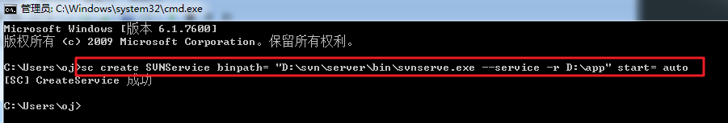

一、SVN概述
1、传统团队合作开发项目的流程
传统的团队合作开发项目流程如下：

问题：上面团队开发的流程会产生哪些痛点？
代码冲突问题。因为多个组员可能修改同一个文件，造成同一个文件相同行代码进行整合的时候会产生冲突。
代码找回(丢失)问题。某个组员误删了文件或误删了某段代码，找不回来了。
采用svn版本控制工具就可以很好的解决上面问题。
团队采用svn方式开发项目的流程图解：
2、SVN介绍
SVN全名Subversion，即版本控制系统（主要可以追溯以前的代码版本）,Subversion是一个通用的系统,可用来管理任何类型的文件,其中主要文件是程序源码,它将数据放置在一个中央仓库(repository)中,这个仓库很像一个普通的文件服务器,不过它会记住文件的每一次变动,这样就可以找回之前的所写的任何的一个代码版本。
相关的版本控制软件：
CSV：全称-Concurrent Versions System,与后面提到的SVN是同一个厂家，不过是svn的前身,现已被svn替代。
VSS：全称-Visual Source Safe,此工具是Microsoft提供的，是使用的相当普遍的工具之一，做net开发使用较多。
SVN：全称-Subversion现在国内企业使用的主流的版本控制系统。
git（分支）：也可以对代码进行版本控制，它开始主要是用于管理linux内核的,由李纳斯发明，企业使用量和svn相当。
国外代码托管（同性交友网站）网站：https://github.com/
国内代码托管网站（码云）：https://gitee.com/
coding(码市): https://coding.net/
二、==svn软件的安装==
==svn是c（client）/s(server)软件的架构，有服务端和客户端。==
服务端下载地址: [https://www.visualsvn.com/visualsvn/download/]
客户端下载地址： [https://tortoisesvn.net/downloads.html]
软件在课件中：
1、安装服务端
提示：如果VisualSVN安装不上可以安装Subversion版本的。
安装VisualSVN服务端步骤：
1、双击安装程序，点击next下一步
- 接受软件的相关协议，点击next。
3、选择勾选最后一项，配置svn服务端的相关的命令到系统的环境变量，点击next下一步
- 选择标准版Standard Edition。
- 选择一个安装目录，这里以安装到D:\svn\server为例
6、点击finish完成
7、查看安装的svn服务端环境变量是否生效，直接在cmd窗口中出输入svn命令，若出现以下提示说明已生效。
如果安装的时候勾选了环境变量，但是依然没有出现以上提示，有以下两种解决办法：
①重启电脑
②(推荐)点击环境变量path选项，直接点击确定即可，不需要修改，这样可以立即生效
再次关闭黑窗口重新打开，输入svn命令进行测试即可。
2、安装客户端
安装客户端的时候，先检查自己电脑系统的位数，选择对应系统位数安装即可。
查看系统位数：计算机-->右键属性
安装TortoiseSVN步骤：
1、双击安装程序，点击next下一步
2、接受软件的相关协议，点击next。
3、选择选项command line client tools-Will be installed on local hard driver
4、点击第一个选项TortoiseSVN，配置安装的目录，目录可自定义，这里以安装到D:\svn\client\中为例，点击next。
注：路径尽量不要包含特殊字符和中文。
5、安装完成，点击finish.。
6、测试是否安装成功，在桌面鼠标右键，多出以下两个选项说明安装成功：
7、如需要汉化可安装系统对应位数的汉化包即可：
安装一路next即可，会自动找到上面svn客户端的安装位置：
切换中文步骤：TortoiseSVN-->Settings-->General-->Language
变成中文效果：
三、==部署单仓库==
==注意:在svn服务器中，我们把存放代码的地方称之为 “仓库”。==
1、部署单仓库的步骤
在svn中创建仓库的步骤总共有三步：
步骤1：建立项目目录 。如：D:/app/blog
步骤2：把项目目录变为仓库。 命令为：svnadmin create D:/app/blog（项目目录绝对路径）
步骤3：开启监管仓库目录的服务。命令为：svnserve -d -r D:/app/blog
选项说明
-d：作为后台服务运行。
-r：监管的目录。
注：上面黑窗口正在监管仓库服务，不要关闭，否则导致后面连接不上。
2、svn中的三大指令的使用
checkout ：检出指令，用于首次与svn服务器建立连接，获取代码到本地目录（第二次以后直接使用update更新指令获取代码。）
commit：提交本地代码到svn服务器
update：把svn服务器上面的最新代码更新下来
三大指令使用图解：
注意：
以后去公司上班，公司基本早就已经部署好svn服务端了，我们开发者只需要在自己的电脑中安装svn客户端即可，公司的相关人员会告诉我们svn仓库地址，且会给我们分配一个账号和密码进行连接svn服务器，然后checkout检出代码在本地进行开发。写完代码后使用commit进行提交。第二天使用update更新指令下载最新代码进行开发。
3、连接svn服务器
步骤1：如在我们桌面中，建立一个项目检出目录myblog，用于存放检出的代码：
==检出和版本库浏览器的区别：==
检出(checkout)：是把仓库所有的代码都检出到本地目录。
版本库浏览器：它可以浏览仓库中有哪些文件，有选择性的检出指定文件。
步骤2：输入我们svn服务器的地址，指定一个检出代码的本地目录
检出成功之后，会在本地检出目录多出一个.svn的隐藏文件夹，==重要此文件夹下存储着和服务端仓库直接的关联信息，更改信息等，不能随意改动。==同时版本为0， 说明是一个新建立的仓库，之间没有任何的commit提交。
4、上传代码到svn仓库中
步骤1：在检出的目录中，建立一些测试文件或目录，鼠标右键选择commit提交指令
步骤2：【重要】填写提交的备注，主要是用于后面代码的版本回退（代码找回）
提交确定之后，提示无权限提交，
因为默认新创建的仓库，只能更新或检出，但是不能commit提交,后面需要修改此仓库的配置文件，进行权限配置。
5、单仓库的权限配置(添加用户名和密码)
==权限可以细分两种：==
匿名用户提交（不需要用户名和密码也可以提交，但是不安全，个人测试使用较多）
【重点】允许授权用户提交（需要用户名和密码，安全一点，企业中使用都是需要密码账号的）
每个仓库的conf目录中，都会有以下三个配置文件：
svnserve.conf ：当前仓库的核心配置文件，可以开启某些文件的功能
passwd：给当前仓库的增加用户名和密码
authz：给当前仓库的用户设置一些权限1
权限
w：write可更新可提交r：read 可更新不可提交
提示：后面学的linux中还有一种权限为x,代表可执行。
5.1、匿名用户提交
设置匿名用户访问，仅需修改svnserve.conf配置文件即可，把其中anno-access = read前面
的#号给去掉，且把read改为write，如下：
==注：最前面要顶格写，即不要留空格。只要保存配置文件会立刻生效，不需要重新监管仓库服务。==
再次进行commit提交测试：成功了，提示版本1，说明此仓库成功提交过1次。
尝试对检出目录的index.php文件进行如下修改测试：
再次进行提交；
5.2、授权用户的权限配置【重点】
即，需要用户名和密码才可以进行代码的操作
修改仓库conf目录中的三个配置文件：svnserve.conf、passwd、authz
步骤1：修改svnserve.conf配置文件，开启passwd和authz文件的功能
配置解释：
19行：设置为none，代表匿名用户无访问权限。
20行：设置为write，允许授权用户可更新也可提交。
27行：代表开启passwd配置文件。
36行：代表开启authz配置文件。
步骤2，修改passwd文件，给当前仓库增加一些用户名和密码
格式： 用户名 = 密码（密码明文）
提醒：==以后在Linux中修改含有敏感的词汇，如密码，需要给这类文件设置严格的访问权限。这样更加安全。==
步骤3：修改authz文件，给当前仓库的用户名分配一些权限（rw）
设置组：
1 | php_group = dashen |
==注：权限有r但未有w，表示只能更新代码到本地但不能提交。且目录后面不可以加斜杠/。==
控制权限形式：
[/目录/子目录/子子孙孙目录/....]
[/]对此单仓库的所有文件进行权限控制
[/core] 对此单仓库的core目录下面的文件进行权限控制，可覆盖根目录配置。
再次进行commit提交，若出现一个输入密码的弹窗，说明配置授权用户访问成功：
注意：如果没有w权限，提交的时候会提示Access Denies权限拒绝。
四、svn常见文件状态图标说明
1、图标异常的解决办法【了解】
- win7解决办法：
底部启动任务管理器-->进程-->找到进程名explorer.exe-->鼠标右键结束，然后再找到文件选项新建刚才结束的进程explorer.exe,如下图所示：
- win8，win10解决办法：
修改如下注册表：按住win+r,输入regedit
需要修改注册表中的某些选项，参考下面的图片：
找到对应的注册表的值（Tortoise打头的），在前面加多空格，空格越多优先级越高：
最后在底部任务栏管理器选中window资源管理器-->鼠标右键重新启动即可,再去看检出目录就可以看到图标了。
这个svn图标不是特别重要，没有出现也没有关系，只是为了可以看到文件的状态，因为提交代码的时候，在文件变更列表中也是可以看看。
2、常见图标的认识
- 常规(同步)图标：
出现此图标，说明此文件中的内容与svn服务器中对应文件内容一样。
- 修改图标：
当我们对本地的某个文件进行修改，导致与svn服务器上面的对应的文件的内容不一致就会出现此图标。
- 无版本控制图标
说明此文件没有与svn服务器建立关联，说明没有被仓库管理过
- 忽略图标
当我们有些文件不想提交到svn服务器或者没有必要提交，我们可以把这些文件设置为忽略即可，那么提交的时候这些文件就不会出现在提交的文件变更列表中。
忽略一般有两种：
忽略一个具体的文件：1.jpg
忽略某一类的文件：*.jpg
具体操作：选中要忽略的文件鼠标右键-->TortoiseSVN-->增加到忽略列表。如下：
其中带recursively是递归的意思，多用于忽略目录中及其子目录中的所有的文件。
- 冲突的图标
尤其是团队开发的时候，多个开发人员对同一个文件的相同行代码都进行了修改，那么后者提交的会覆盖前者提交的，但是svn不会进行覆盖，会提示我们解决冲突，把具有冲突的文件更新下来就是上面的黄色图标。
五、svn代码冲突的解决【重点】
说明：尤其是团队开发的时候，多个开发人员对同一个文件的相同行代码都进行了修改，那么后者提交的会覆盖前者提交的，但是svn不会覆盖，会提示我们解决冲突。
下面就来演示造成冲突的场景以及怎么解决
1、造成冲突的场景
这里以dashen用户和cainiao用户对blog仓库的index.php的文件进行操作。
首先，他们两者都要把代码给更新下来，此时，两者的代码应该是完全一致的：
先是cainiao用户对index.php文件进行修改：修改6-10行,并成功commit提交。
成功提交之后，即svn仓库中index.php的文件的最新内容是cainiao用户提交的。
随后dashen用户同样也对index.php文件进行修改6-9行。
现在dashen用户commit提交代码出现如下的冲突提示：
出现上面的提示，说明提交的文件的内容与svn仓库中的index.php文件内容有冲突部分。
产生冲突的原因：
cainiao用户：修改6-10行
dashen用户：修改6-9行
其中6-9都被两者修改过，导致仓库无法知道使用哪部分代码，所以后者提交失败，报冲突。
2、解决冲突
步骤1：鼠标选中有冲突的文件，鼠标右键选择更新，

可见，更新下来会多出三个辅助文件：
文件名(黄色标识) ：把服务器上面最新文件内容与即将提交的冲突内容进行一个融合。
文件名.mine ： 当前用户即将要提交的文件内容。
文件名.r(前一版本)：所有用户提交之前，即文件冲突之前，仓库上最新的文件内容。
文件名.r(后一版本)：仓库上最新的文件内容。
==解决办法：==
把三个辅助文件都给删除，修改含有黄色感叹号的文件，进行代码整合修改，再次进行提交即可。
注：整合冲突代码的时候，千万不要覆盖人家代码，合并之前需要程序员之间彼此商量一下。
六、==svn中的版本回退==【重点】
使用到版本回退的场景：
- 一般由于不小心误删文件或某段代码，并且提交了，这时候就可以通过svn提供的更新至版本来找回。
步骤1：选中要回退的文件，更新至版本
在通过之前提交的日志来找回：
找到之前提交的日志信息，点击确定，即可回到之前的代码版本。
注：
1、检出目录，鼠标右键点击更新是更新最新的版本，如果需要回退到指定的版本，需要通过更新至版本来实现。
2、如要要查看某个文件的版本，右键选中此文件更新至版本即可，可以查看当前文件所有的版本变化。
3、若点击空白处，可以查看当前项目所有代码的版本
以后上班，下班之前先commit提交代码。早上上班，开启电脑，先update更新最新代码版本，需要在最新的代码基础上进行开发。
七、==部署多仓库==
因为一个公司会有多个项目同时进行，比如有java项目，android项目、php项目。其实也就对应着多个仓库，那么不同的开发人员其对应的svn仓库的连接地址也不同。
==实现步骤：==
步骤1：如在app目录中建立多个项目文件夹（android、java）

步骤2：把上面的android和java目录变为项目仓库。
注：blog已经是仓库了，不要重复创建。
步骤3：监管所有仓库的==父目录==（D:/app）,这样才可以访问到其中的某个仓库项目代码
==怎么访问多仓库中的某个项目仓库代码？==
答：访问形式：svn://ip/仓库名/目录/子孙目录/....
如访问blog仓库，地址为：svn://127.0.0.1/blog/
如访问java仓库，地址为： svn://127.0.0.1/java/
如访问android仓库，地址为： svn://127.0.0.1/android/
如访问其中blog仓库项目：
==怎么访问单仓库中的某个仓库代码？==
答：访问形式： svn://ip/目录
注： svn://127.0.0.1 这种url访问形式只能对单仓库有效，多仓库的访问后面需加仓库名。
八、==多仓库的权限设置==
由于这里有三个仓库，这里以其中一个仓库blog为例，进行权限设置。
还是修改三个文件：svnserve.conf 、passwd、authz
svnserve.conf配置和passwd配置和之前单仓库配置一样，不用变。
仅需要改变authz配置文件即可：
单仓库和多仓库的authz权限文件配置区别：
单仓库：[/目录/子目录/子孙目录/.….]
多仓库：[==当前仓库名==:/目录/子目录/子孙目录/.….]
九、SVN其他功能
1、清除用户名和密码
做法：鼠标右键TortoiseSVN-->Settings-->已保存数据-->清除全部-->确定
2、export导出指令
export指令：相当于拷贝项目,导出的代码不会含有隐藏文件.svn，即不受svn版本控制
导出来如下所示：
3、更改svn服务器地址
做法：TortoiseSVN-->重新定位-->输入新的仓库地址即可
重新输入新的仓库地址即可：
十、==svn监管服务注册成window系统服务==
1、创建SVN监管仓库服务
快捷键win+r，输入cmd，以管理员的方式执行以下命令:
1 | sc create SVNService binpath= \"D:\svn\server\bin\svnserve.exe --service -r D:\app\" start= auto |
特别注意:
binpath=后面有个空格， start=后面有个空格（只能有一个空格），其中SVNService 是服务的名称，此服务名称可以自己自定义，只要不和系统其它服务名重名即可。

注册成功之后会在系统服务面板中出现对应。
查看：底部任务栏启动任务管理器-->服务-->找到所注册的服务
设置为服务自动启动：服务名右键属性
==注：如果是以之前黑窗口的形式监管服务，就不可以在使用window服务的形式进行监管。==
2、服务相关控制指令
关闭、开启、重启服务:
net stop|start|restart 服务名 （如开启svn服务：net start SVNService）
删除服务:
sc delete 服务名 （如删除svn服务：sc delete SVNService）

3、cmd命令的批处理
我们可以把之前在cmd中写的命令直接写在后缀名为bat的文件中，然后以管理员方式运行bat文件就相当于在cmd命令行中运行命令是一样的，这样操作起来更加方便。
如其中关闭svn服务的批处理文件stop_svn.bat的内容如下：
开启svn服务，start_svn.bat内容如下：
十一、==svn中的钩子程序==
1、钩子介绍
抽象介绍：所谓钩子就是与一些版本库事件触发的程序，例如新修订版本的创建，或是未版本化属性的修改。每个钩子都会被告知足够多的信息，包括那是什么事件，所操作的对象，和触发事件的用户名。通过钩子的输出或返回状态，钩子程序能让工作继续、停止或是以某种方式挂起。
说的简单点，我们可以利用钩子在提交前或者是提交后做一些操作。如:
利用提交前的钩子让用户在提交代码前强制用户必须填写备注信息(了解)。
利用提交后的钩子把svn仓库代码实时同步到网站web目录（重点掌握，开发中使用较多）
前钩子和后钩子触发的顺序图解：
==钩子的种类：==
每个仓库目录中都会有个hooks目录，其中包含了所有的钩子模板代码。
其中使用最多的有两个钩子：提交前的钩子、提交后的钩子（重点，开发中使用较多）
2、钩子实战
2.1、后钩子实时同步仓库代码到web站点【重点】
- 利用提交后的钩子(post-commit)把svn仓库代码实时同步到网站web目录
图解如下：
web站点 D:\local.com\blog
步骤1：==先确保web站点目录与相应的仓库要建立关联，只要含有其仓库的.svn隐藏文件夹即可==。在web站点目录检出就有了
步骤2：把blog仓库中的hooks的post-commit.tmpl复制一份在当前目录，并改名为post-commit.bat
post-commit.bat内容为：
1 | SET SVN="D:\svn\sever\bin\svn.exe" |
注意：要确保设置的用户有写入的权限。
效果：
2.2、前钩子强制用户填写提交时备注信息【了解】
- 利用提交前的钩子让用户在提交代码前强制用户必须填写备注信息。
第一步：打开blog仓库的hooks目录，把pre-commit.tmpl文件复制一份在当前目录，改名为pre-commit.bat,
pre-commit.bat内容如下：
1 | @echo off |
注：如需要中文提示，为防止乱码需要把pre-commit.bat文件的编码改为ANSI。英文提示则不需要
总结
创建单仓库（3个步骤）：
创建项目目录（
D:/app/blog）把项目目录变为仓库
svnadmin create D:/app/blog监管仓库服务
svnserve -d -r D:/app/blog
- 访问单仓库项目：
svn://ip/目录 - 单仓库的权限配置（
authz）：
1 | [groups] |
创建多仓库（3个步骤）：
1.创建项目目录（
D:/app/blog、D:/app/java）2.把项目目录都变为仓库
1
2svnadmin create D:/app/blog
svnadmin create D:/app/java3.监管仓库服务
svnserve -d -r D:/app访问多仓库项目：
svn://ip/仓库名/目录多仓库的权限配置（
authz）：1
2
3
4
5
6
7
8
9
10
11[blog:/]
@php_group = rw
@cainiao_group = rw
admin = rw
* =
[blog:/core]
@php_group = rw
@cainiao_group = rw
admin = rw
* =
版本回退
鼠标右键->tortoiseSvn->更新至版本-->点击显示日志->通过对应的日志信息，回退到指定的版本
解决冲突
先把具有冲突的文件拉取（
update）把三个辅助文件删掉，修改含有黄色感叹号的文件，进行代码整合。再次进行提交